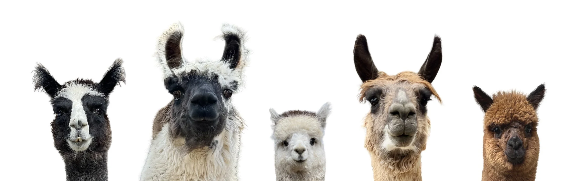
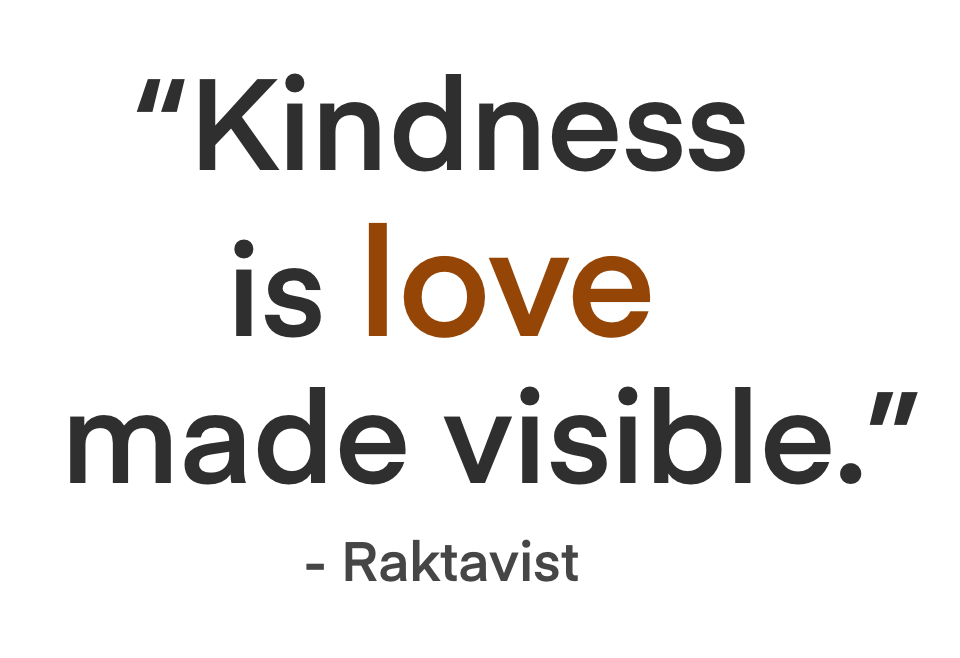
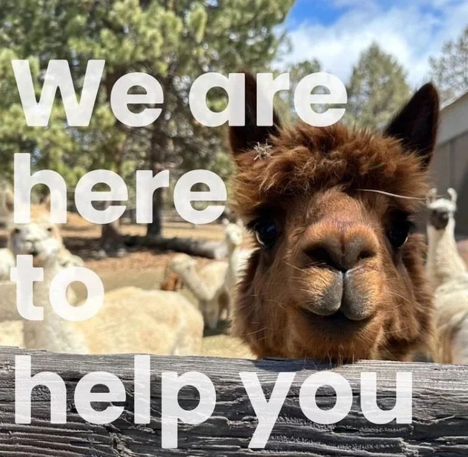

Home · The herd
Scenes from the sanctuary.
A hundred animals, a hundred stories. Here are a few moments from a regular day at Four Roots Ranch.



Every animal at Four Roots Ranch has a name, a history, and something to teach us. We share their stories — quietly, honestly — to raise awareness about compassionate care.



Want to meet every resident?
We share longer profiles of our animals on Substack, and post regular updates on Instagram. Or visit our full residents page to see the whole family.